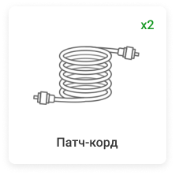
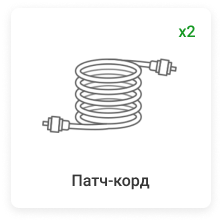

Системы видеонаблюдения для складов
Профессиональный монтаж
Сертифицированные монтажные бригады GreenVision оснастили системами видеонаблюдения множество объектов, включая склады розничной торговли и производственные хранилища. Предоставляем официальную гарантию на оборудование и работы.
Оборудование для систем видеонаблюдения и систем контроля доступа на производстве; монтаж камер с учетом особенностей каждого объекта; гарантии и техническое обслуживание.
Пример базового комплекта оборудования для системы видеонаблюдения на складе


 


Базовый перечень оборудования решает основные проблемы видеоконтроля в магазине. Наши специалисты готовы предложить схему подключения системы видеонаблюдения исходя из особенностей Вашего объекта. Соответственно, список необходимого Вам оборудования и его стоимость может измениться.
Ключевые зоны расположения камер:
Технические специалисты и монтажники оборудования GreenVision составят схему расположения камер исходя из конкретных целей и задач, которые должно решить видеонаблюдение в Вашей торговой точке. Мы поставляем качественное оборудование различных ценовых категорий (эконом, стандарт, премиум).
Что входит в услугу установки типового комплекта видеонаблюдения на складе?
цена от:
5994 грн
• Комплект видеонаблюдения FullHD разрешения, камеры для наружной и внутренней установки с инфракрасной подсветкой до 20 метров
• Видеорегистратор с накопителем объемом 8ТВ

Подключение и настройка удаленного доступа:
- • Подключение видеорегистратора к роутеру заказчика в свободный порт, длинна кабеля не более 5 метров.
- • Настройка удаленного просмотра на 2 устройствах через протокол Р2Р (обучение пользователя, просмотр записей, сохранение записи на usb или память телефона)
- • Проброс портов на роутере заказчика, регистрация в платном облаке для резервирования записей
- • Консультация заказчика по установке соответствующей скорости интернета и статического адреса у провайдера интернета.
Работы по установке:
- • Установка 14 камер на высоте не более 3 метров (с коробками)
- • Прокладка кабеля открытым способом не более 30 метров до камеры (крепление стяжки; клипсы; под армрстронгом, без сверления отверстий для фиксации кабельной трассы) на высоте до 3 метров
- • Сверление не более 16 отверстий до 20 сантиметров для прокладки в них кабеля по необходимости
- • Подключение видеорегистратора и камер к сети (3 свободные розетки, или удлинитель заказчика )
- • Подключение видеорегистратора к телевизору заказчика на расстоянии 1.5 метра
- • Подключение и установка Жесткого диска в видеорегистратор
- • Настройка записи камер: постоянно; по движению; по времени
Дополнительные работы и оборудование оговариваются и оплачиваются отдельно!
Пример схемы установки системы безопасности

СВЯЖИТЕСЬ С НАМИ ПРЯМО СЕЙЧАС
Что бы ознакомиться с условиями сотрудничества, стоимостью продукции, программой лояльности для постоянных партнеров, а так же подать заявку, заполните и отправьте форму, которая находится ниже.